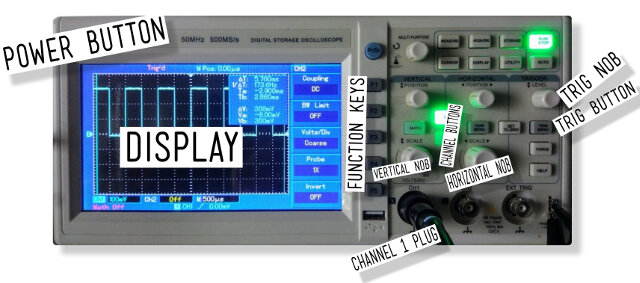
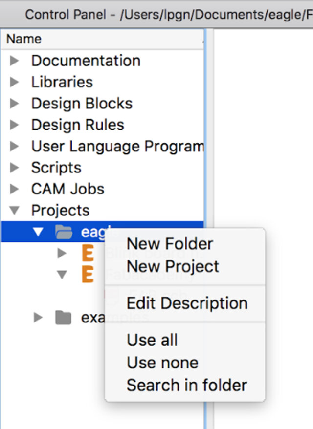
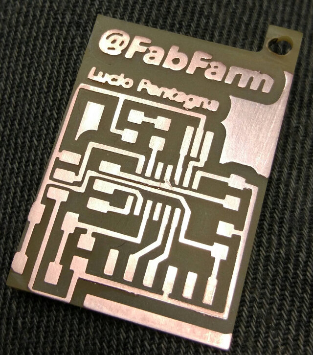

Electronics Design
Group assignment
- Use the test equipment in your lab to observe the operation of a microcontroller circuit board
Individual assignment
- Redraw the echo hello-world board, add (at least) a button and LED (with current-limiting resistor), check the design rules, make it, test it.
Learning outcomes:
- Select and use software for circuit board design
- Demonstrate workflows used in circuit board design
Have you:
- Shown your process using words/images/screenshots
- Explained problems and how you fixed them, including how you worked with design rules for milling (DRC in EagleCad and KiCad)
- Included original design files (Eagle, KiCad, Inkscape, .cad - whatever)
Week workflow
Weekly assignment → introduction to Eagle → Edit Schematic/Board → Mill the board → solder components → debug → edit and publish website
Group Assignment
Go to the group assignment page
Tools used
- Solder Station
- TaoBao CNC
- Test equipment: digital voltmeter, oscilloscope, regulated power supply
Software Used
- Eagle
- Fab Modules
- Gimp
Design files of hello board
- zip of Eagle source files
- internal jpeg to CNC
- external jpeg to CNC
{kind=link}
- Using the test equipment in our lab
- I started by watching a SparkFun's YouTube video on an oscilloscope
I learned: - That an oscilloscope measures voltage over time: getting amplitude, frequency, transient signals
- The important buttons...

- Calibrating the probe/Adjusting compensation capacitor
- On the probe select to X10
- Connect the probe to channel one plug
- Connect the probe to the 1kHz 5V square wave generator
- Turn on oscilloscope
- Make sure only channel one is on, click on CH2 button until it's off and the other way around on CH1 button
- Select DC coupling with the F1 key
- Press button F4 to select 10X on probe mode
- Press trig/menu button and select type as "edge" and source CH1
- Select slope as "Rise"
- Adjust the vertical and horizontal knobs until you see the wave
- If wave is moving adjust trig knob until it stops
- To calibrate the probe adjust the screw on the base of the probe until the wave is square
- Eagle introduction:
- I started by watching the video tutorials below I had a look through the Eagle tutorial for the week 6. Following it I downloaded and installed the Fab library for Eagle.
- Reverse engineering Neil's Board
- I started by having a look at the Electronics Design - Eagle tutorial With the above schematics in hand I started redrawing it in Eagle
- Schematics Step by Step:
- Under projects → right-click on Eagle → click on new project → name project
- Right-click on project name → new → Schematic
- Type "add" → search for each part
- Place part with left click → repeat procedure until all the same part is added → press ESC to add next part → search for next part or press ESC to go back to schematics
- Type "rotate" and left click on part origin to turn part around to desired position
- Type "net" to connect part to each other
- Type "name" and left click on top of part to name part
- Type "label" and left click on wire to connect one to the other without having to net
- Type "value" and left click on part origin to designate part "value"
- Type "move" to position the part as needed
- Save the file
- Drawing the Board
- Left click on file → type "board" → accept warning and left click yes to create start designing the PCB from previously created schematics
- All components will be displayed to the left of the board → Drag them one by one with command "move" + left click drag to position inside the board
- Type "rotate" to turn the components the same way as in the schematics
- After all is positioned → resize board size dragging the sides of the original board with the command "move"
- Type "polygon" and select top layer and draw a square around the board limits in order to create the top layer of the PCB
- Type "ratsnest" → start autorouter type "auto". This command is very convenient as it gives initial idea on how you can route the board, but it doesn't replace manual routing
- Select start
- Adjust traces if needed with command "ripup" to remove positioned paths
- Place new paths with command "route" and "move" to better position
- Type command "info" + left click in order to fine tune position of paths as well as thickness
- Adding the LED and Button
- In order to add the LED and the Button I went back to the Schematics
- In the schematics type "add" to add two resistors, one LED and the button
- The first resistor works to limit the current that goes to the LED. It should be placed in the positive side of it. In order to dimension the LED I checked first the LED data sheet. There I looked for DC forward current, in this case 30, and forward voltage, in this case 2.1
- With those two values plus my input voltage "5" in hand I input the values to the website LED center in order to calculate the correct resistor, in this case 100Ohms
- As for the switch I used a 10K resistor as a pull-up resistor
- Like before I used the commands move, rotate, label, name, copy to position all components in their place
- Make BOM (Bill of Materials)
- Left click on design link → left click on Schematic
- Wait for program to display part → type new search string in case desired part does not appear → left click manual search → choose desired part → left click select
- Repeat previous process until all parts are found
- Left click export and save BOM File
- Exporting the image for fabmodules
- Go to Options, Set, Misc and deselect Display Pad names, signal and via lengths. This will prevent undesired text from appearing on the exported image
- On layers toolbar select only the top layer
- Next type "export" → select image and monochromatic → and in resolution type 500
- Save to desired location
- The result is a black and white image
- Edit in Gimp
- With the exported Eagle file in hand open in Gimp
- In Gimp I decided to add some wording. This was easy by selecting the text tool, then font size and rotating the wording to an ideal location
- I also removed unnecessary black areas with the bucket tool
- To create the outline I selected the area I wanted to keep and covered it with the bucket tool
- In the end you should have two images, one for the PCB and one for the outline
- Fab modules and Milling
- Soldering/Populating the PCB and Debugging
- Burn firmware
- Identify example code:
- Identify commands to compile and burn firmware
- Compile source code
- Adapting makefile to work with my programmer
- Burn firmware
- Identify what fuses to burn
- Burn fuses



On the above schematics it is possible to see that most components are not connected with a line, "net" command, except for the crystal (XTAL1). The rest of the components are connected virtually with the command "label" as explained in the letter "h" above.
To position the components on the PCB use commands as done on the schematics:
You can watch how I did it here, pump up the volume for some Cash!
In case it doesn't play, watch it on YouTube!

After some editing here it is:
| Qty | Location | Digikey or Mouser Part number | Manufacture Part # | Description |
|---|---|---|---|---|
| 1 | U1 | ATTINY44 | ATTINY44 | IC 4KB FLASH |
| 2 | R1 | 311-10.0KFRCT-ND | RC1206FR-0710KL | RES SMD 10K OHM 1% 1/4W 1206 |
| 1 | R2 | 311-100FRCT-ND | RC1206FR-07100RL | RES SMD 100 OHM 1% 1/4W 1206 |
| 1 | D3 | 160-1169-1-ND | LTST-C150GKT | LED GREEN CLEAR 1206 SMD |
| 1 | C1 | 445-1423-1-ND | C3216X7R1H105K160AB | CAP CER 1UF 50V X7R 1206 |
| 1 | FTDI | 6 pin header | ||
| 1 | RESONATOR | XC1109CT-ND | ECS-CR2-20.00-B-TR | CER RES 20.0000MHZ 15PF SMD |
| 1 | 450-2058-1-ND | FSM6JSMATR | SWITCH TACTILE SPST-NO 0.05A 24V | |
| 1 | ISP | 649-95278-101A06LF | 71600-006LF | Headers & Wire Housings 2X3P UNSHRD HDR 30 micro inch gold |


The process in Fab modules and Milling is already outlined by the week 4 assignment so I will only keep here an image of the result

The result
As before the populating and debugging is already outlined by the week 5 assignment so I will only keep here an image of the result
Disclaimer
I actually did this activity in the embedded programming week. I only place it here to fulfill the Fab Academy requirements.
With that here follows the test of my board.
- There is this code from Prof. Neil
- With all files prior downloaded on one directory, in Linux I rename the file to makefile and run the script to create the firmware (this step I will repeat every time I want to modify the code):
mv hello.ftdi.44.echo.c.make makefile make
- Done in previous step
Run:
make program-usbtiny

- That was done already in the makefile
Run:
make program-usbasp-fuses

Here I show how I used the programmers on Output devices. For another method without the Arduino IDE check Embedded Programming
 USBasp
USBasp
Programming an ATtiny44 board with Arduino using a FabTinyISP or USBtinyISP that I made.
 FabISP
FabISP
Programming an ATtiny44 board with Arduino using a FabTinyISP or USBtinyISP that I made was fine. There is only the inconvenience of having to power the target board.
Start by opening the Arduino IDE, then in tools choose the board, in my case ATtiny24/44/84. Next in processor I chose ATtiny44.
Next chose the clock, as I'm not using an external crystal I chose "Internal 8MHz".
Next go to Programmer: "USBasp" or "USBtiny" for the FabISP.

In the video below I show the process of programming with the FabISP.
For a full resolution video check YouTube
In this video I show the process of programming with the USBasp.
For a full resolution video check YouTube
First test
Burning Neil's code "hello.ftdi.44.echo.c"
Here instead of using terminal and avrdude, I used the Arduino IDE as it has a built-in serial monitor.
The results are as follows in the video
I really enjoyed learning this new tool. I have used Eagle before to view PCBs but never actually designed one. I feel it opens my mind to a lot of new things to come!
To see how I program this board check Embedded Programming week.